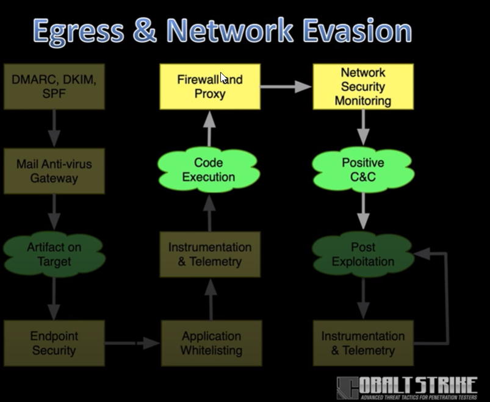

The C2 Problem Set:- - most places have a network firewall that denies all outbound traffic
- - traffic will need to conform to the proxy's protocol
- - we also need to evade IOC looking for cobalt or other known attacks

HTTP/S Proxy Details:- Uses the IE's proxy settings for current user
- this means if the user can access google.com so can you
- Automatic NTLM auth is OK
- Will prompt user if proxt authentication fails
- Use custom proxy settings if necessary
-
- Beware - WinlNet library may have TLS limitation incompatible with your redirector
- if youre using azure but attempting to attack windows 7, the TLS could be not up to date enough
Profile TIPS:
- dont use public examples in production- everyone fucking knows about them
-
- do not allow http-get -> server -> output response
-
- do not allow http-post -> server -> output response
- when the beacon sends data back to cobalt strike
- Change URIs and use prepend to mask IOC in http-stager block
- only if you allow staging
AVS observe the fixed bytes at the beginning of a data stream, it can regognize cobalt strike